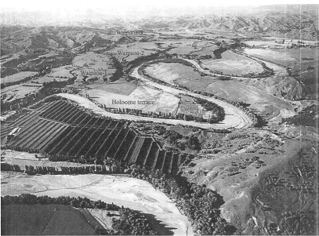

<!DOCTYPE html>
<html>
<head>
    <meta charset='utf-8' />
    <title></title>
    <meta name='viewport' content='initial-scale=1,maximum-scale=1,user-scalable=no' />
    <script src='https://api.tiles.mapbox.com/mapbox-gl-js/v0.28.0/mapbox-gl.js'></script>
    <link href='https://api.tiles.mapbox.com/mapbox-gl-js/v0.28.0/mapbox-gl.css' rel='stylesheet' />
    <style>
        body { margin:0; padding:0; }
        #map { position:absolute; top:0; bottom:0; width:100%; }
    </style>
</head>
<body>

<style>
    .mapboxgl-popup {
        max-width: 400px;
        font: 12px/20px 'Open Sans', sans-serif;
    }
    #menu {
        background: #fff;
        position: absolute;
        z-index: 1;
        top: 1%;
        left: 10px;
        border-radius: 3px;
        width: 120px;        
        font-family: 'Open Sans', sans-serif;
    }

    #menu a {
        font-size: 12px;
        color: #404040;
        display: block;
        margin: 0;
        padding: 0;
        padding: 10px;
        text-decoration: none;
        border-radius: 3px 3px 0 0;
        border-bottom: 1px solid rgba(0, 0, 0, 0.25);
        
    }

    #menu a:last-child {
        border-radius: 0 0 3px 3px;
    }


    #menu a.active {
        background-color: #595959;
        color: #ffffff;        
    }

    .filter-group {
        font: 12px/20px 'Open Sans', sans-serif;
        position: absolute;
        bottom: 25px;
        right: 10px;
        z-index: 1;
        border-radius: 3px;
        width: 120px;
        color: #fff;
    }

    .filter-group input[type=checkbox]:first-child + label {
        border-radius: 3px 3px 0 0;
    }

    .filter-group label:last-child {
        border-radius: 0 0 3px 3px;
        border: none;
    }

    .filter-group input[type=checkbox] {
        display: none;
    }

    .filter-group input[type=checkbox] + label {
        background-color: #3386c0;
        display: block;
        cursor: pointer;
        padding: 10px;
        border-bottom: 1px solid rgba(0, 0, 0, 0.25);
    }

    .filter-group input[type=checkbox] + label {
    	color: #404040;
        background-color: #fff;
        text-transform: capitalize;
    }

    .filter-group input[type=checkbox] + label:hover,
    .filter-group input[type=checkbox]:checked + label {
        color: #404040;

    }

    .filter-group input[type=checkbox]:checked + label:before {
        color: #404040;
        content: '✔';
        margin-right: 5px;
    }
</style>
<nav id="menu"></nav>
<div id='map'></div>
<nav id='filter-group' class='filter-group'></nav>

<script>
mapboxgl.accessToken = 'pk.eyJ1IjoiYW5kcmV3ODQ1NTUiLCJhIjoiY2lydnp2Nzk3MGoza2ZnbTh1b2FoenFqYSJ9.iPSB6vUKQLifDYV570B8zg';
var journals = {
    "type": "FeatureCollection",
    "features": [{
        "type": "Feature",
        "properties": {
            "description": "Waves are generally considered to be an important control on shore platform evolution but there have been very few detailed studies of wave dynamics on rocky coasts. This study provides a detailed description of wave transformation processes across a shore platform near Gisborne, New Zealand.",
            "info": "H. Ogawa, M.E. Dickson, P.S. Kench",
            "link": "<a href=\"http://www.sciencedirect.com.ezproxy.auckland.ac.nz/science/article/pii/S0278434311001683\" target=\"_blank\">Link to article</a>",
            "title": "Wave transformation on a sub-horizontal shore platform, Tatapouri, North Island, New Zealand",
            "icon": "coastal"
        },
        "geometry": {
            "type": "Point",
            "coordinates": [178.14901,-38.642099]
        }
    }, {
        "type": "Feature",
        "properties": {
        	"description": "Over the late Holocene highstand, the shoreline at Poverty Bay, NZ migrated 12 km seaward, fed by sediment from the Waipaoa river. Paleo-shorelines indicate steadily decelerating progradation, possibly signaling changes in forcing on the Waipaoa Sedimentary System.<br>The progradational history of this enviroment is shown to the right.",
            "info":"M.A. Wolinsky, J.B. Swenson, N. Litchfield, J.E. McNinch",
            "link": "<a href=\"http://www.sciencedirect.com.ezproxy.auckland.ac.nz/science/article/pii/S0025322709002928\" target=\"_blank\">Link to article</a>",
            "title": "Coastal progradation and sediment partitioning in the Holocene Waipaoa Sedimentary System, New Zealand",
            "icon": "coastal"
        },
        "geometry": {
            "type": "Point",
            "coordinates": [177.889078,-38.6263790]
        }
    }, {
        "type": "Feature",
        "properties": {
            "description": "In the headwaters of the Waipaoa catchment, fluvio-mass movement gully complexes are currently significant contributors of sediment, delivery of which is buffered by fans which have developed in the small tributaries that lead from the gully complexes.",
            "info": "Ian C. Fuller, Mike Marden",
            "link": "<a href=\"http://www.sciencedirect.com.ezproxy.auckland.ac.nz/science/article/pii/S0025322709002667\" target=\"_blank\">Link to article</a>",
            "title": "Rapid channel response to variability in sediment supply: Cutting and filling of the Tarndale Fan, Waipaoa catchment, New Zealand",
            "icon": "hillslope"
        },
        "geometry": {
            "type": "Point",
            "coordinates": [177.7887,-38.2425]
        }
    }, {
        "type": "Feature",
        "properties": {
            "description": "Nearshore regions act as an interface between the terrestrial environment and deeper waters. As such, they play important roles in the dispersal of fluvial sediment and the transport of sand to and from the shoreline. This study focused on the nearshore of Poverty Bay, New Zealand, and the processes controlling the dispersal of sediment from the main source, the Waipaoa River.",
            "info": "Aaron J. Bever, Jesse E. McNinch, Courtney K. Harrisa",
            "link": "<a href=\"http://www.sciencedirect.com.ezproxy.auckland.ac.nz/science/article/pii/S0278434310003705\" target=\"_blank\">Link to article</a>", 
            "title": "Hydrodynamics and sediment-transport in the nearshore of Poverty Bay, New Zealand: Observations of nearshore sediment segregation and oceanic storms",
            "icon": "coastal"
        },
        "geometry": {
            "type": "Point",
            "coordinates": [177.96,-38.72]
        }
    }, {
        "type": "Feature",
        "properties": {
            "description": "Connectivity between an actively eroding gully complex and upper Waipaoa catchment via a steep, 1-kmlong alluvial fan is assessed using digital elevation models (DEMs) of the Tarndale fan derived from 10 high resolution GPS surveys between 2004 and 2008. Repeat DEM analysis provides a means of assessing transfer of sediment supplied from the Tarndale gully through the fan to the Te Weraroa Stream and thus inferring connectivity between these landscape components from which a conceptual coupling model is derived.",
            "info": "Ian C. Fuller, Mike Marden <br><a href=\"http://images2.pics4learning.com/catalog/i/img_3051.jpg\"></a>",
            "link": "<a href=\"http://www.sciencedirect.com.ezproxy.auckland.ac.nz/science/article/pii/S0169555X10005490\" target=\"_blank\">Link to article</a>",
                "title": "Slope–channel coupling in steepland terrain: A field-based conceptual model from the Tarndale gully and fan, Waipaoa catchment, New Zealand",
            "icon": "hillslope"
        },
        "geometry": {
            "type": "Point",
            "coordinates": [177.790659,-38.242552]
        }
    },       {
        "type": "Feature",
        "properties": {
            "description": "Late Pleistocene fluvial terrace deposits within the Waipaoa River system of North Island, New Zealand provide some insight into the fluvial history of the region that can be potentially translated to the marine sedimentary record. Pebble counts and sand detrital modes from terrace remnants suggest significant compositional differences between these terraces and the modern stream deposits. The terrace deposits are enriched in sandstone lithics (sand and gravel), as well as monomineralic quartz and feldspar (sand). In contrast, the modern Waipaoa River is dominated by mudstone fragments, mainly products of gullying in the Waipaoa River headwaters region.",
            "info": "Kathleen M. Marsaglia, Alissa M. DeVaughn, Dawn E. James, Michael Marden",
            "link": "<a href=\"http://www.sciencedirect.com.ezproxy.auckland.ac.nz/science/article/pii/S0025322709002886\" target=\"_blank\">Link to article</a>",
            "title": "Provenance of fluvial terrace sediments within the Waipaoa sedimentary system and their importance to New Zealand source-to-sink studies",
            "icon": 'fluvial'
            },
            "geometry": {
                "type": "Point",
                "coordinates": [177.823374,-38.371728]
            }

    },        {
                    "type": "Feature",
            "properties": {
                "description": "A stability model of drainage basin mass balance is used to interpret historic and prehistoric patterns of sediment production, storage and output from the Waipaoa River basin, New Zealand and assess the sensitivity of basin sedimentyield to land use change in the historic period. Climate and vegetation cover changed during the late Holocene, but the drainage basin mass balance systemwas stable before the basin was deforested by European colonists in the late19th and early 20th centuries. In this meso-scale dispersal system sediment sources and sinks are closely linked, and before that time there was also little variability in the rate of terrigenous mass accumulation on the adjacent continental shelf.",
                "info": "Jonathan D. Phillips and Basil Gomez<br>",
                "link": "<a href=\"http://onlinelibrary.wiley.com/doi/10.1111/j.1365-2117.2007.00325.x/abstract\" target=\"_blank\">Link to article</a>",
                "title": "Controls on sediment export from the Waipaoa River basin, New Zealand",
                "icon": 'fluvial'
            },
            "geometry": {
                "type": "Point",
                "coordinates": [177.845201,-38.418572]
            }
        }]
};

var filterGroup = document.getElementById('filter-group');
var map = new mapboxgl.Map({
    container: 'map',
    style: 'mapbox://styles/andrew84555/ciwd6v22v00102ql7c5r56anu',
    center: [177.8664, - 38.4695],
    zoom: 9.5
});


map.on('load', function() {
    // Add a GeoJSON source containing place coordinates and information.
    map.addSource("journals", {
        "type": "geojson",
        "data": journals
    });
    map.addSource('DigitialGlobe Imagery', {
        type: 'raster',
        url: 'mapbox://mapbox.satellite',
        tileSize: 256
    });
    map.addSource('Hillshade', {
        type: 'raster',
        url: 'mapbox://andrew84555.dbi3jdze',
        tileSize: 256
    });
    map.addLayer({
        'id': 'DigitialGlobe Imagery',
        'type': 'raster',
        'source': 'DigitialGlobe Imagery',
        'source-layer': 'DigitialGlobe Imagery',

    });
    map.addLayer({
        'id': 'Hillshade',
        'type': 'image',
        'url': 'Hillshade',
        'source-layer': 'Hillshade',

    });

    var frameCount = 8;
    for (var i = 0; i < frameCount; i++) {
        map.addSource('prog' + i, {
            type: 'image',
            url: 'images/' + i + 'a.gif',
            coordinates: [
                [177.812861519, -38.562933925],
                [178.128957046, -38.562933925],
                [178.128957046, -38.765719368],
                [177.812861519, -38.765719368]
            ]
        });

        map.addLayer({
            id: 'prog' + i,
            source: 'prog' + i,
            type: 'raster',
            paint: {
                'raster-opacity': 0,
                'raster-opacity-transition': {
                    duration: 1
                }
            }
        });
    }

    var frame = frameCount - 1;
    setInterval(function() {
        map.setPaintProperty('prog' + frame, 'raster-opacity', 0);
        frame = (frame + 1) % frameCount;
        map.setPaintProperty('prog' + frame, 'raster-opacity', 0.8);
    }, 500);


    journals.features.forEach(function(feature) {
        var symbol = feature.properties['icon'];
        var layerID = 'poi-' + symbol;

        // Add a layer for this symbol type if it hasn't been added already.
        if (!map.getLayer(layerID)) {
            map.addLayer({
                "id": layerID,
                "type": "symbol",
                "source": "journals",
                "layout": {
                    "icon-image": symbol,
                    "icon-allow-overlap": true
                },
                "filter": ["==", "icon", symbol]
            });

            // Add checkbox and label elements for the layer.
            var input = document.createElement('input');
            input.type = 'checkbox';
            input.id = layerID;
            input.checked = true;
            filterGroup.appendChild(input);

            var label = document.createElement('label');
            label.setAttribute('for', layerID);
            label.textContent = symbol;
            filterGroup.appendChild(label);

            // When the checkbox changes, update the visibility of the layer.
            input.addEventListener('change', function(e) {
                map.setLayoutProperty(layerID, 'visibility',
                    e.target.checked ? 'visible' : 'none');
            });
        }
    });
});


map.on('click', function (e) {
    var features = map.queryRenderedFeatures(e.point, { layers: ['poi-fluvial', 'poi-coastal', 'poi-hillslope'] });

    if (!features.length) {
        return;
    }

    var feature = features[0];

    // Populate the popup and set its coordinates
    // based on the feature found.
    var popup = new mapboxgl.Popup()
        .setLngLat(feature.geometry.coordinates)
        .setHTML('<h2 ALIGN=center>' + feature.properties.title + '</h2><P ALIGN=center><i>' + feature.properties.info + '<br></i>'+ feature.properties.link + '</p><p>'+ feature.properties.description + '</p>')
        .addTo(map);
});

// Use the same approach as above to indicate that the symbols are clickable
// by changing the cursor style to 'pointer'.
map.on('mousemove', function (e) {
    var features = map.queryRenderedFeatures(e.point, { layers: ['poi-fluvial', 'poi-coastal', 'poi-hillslope'] });
    map.getCanvas().style.cursor = (features.length) ? 'pointer' : '';
});


var toggleableLayerIds = [ 'DigitialGlobe Imagery', 'Hillshade'];

for (var i = 0; i < toggleableLayerIds.length; i++) {
    var id = toggleableLayerIds[i];

    var link = document.createElement('a');
    link.href = '#';
    link.className = 'active';
    link.textContent = id;

    link.onclick = function (e) {
        var clickedLayer = this.textContent;
        e.preventDefault();
        e.stopPropagation();

        var visibility = map.getLayoutProperty(clickedLayer, 'visibility');

        if (visibility === 'visible') {
            map.setLayoutProperty(clickedLayer, 'visibility', 'none');
            this.className = '';
        } else {
            this.className = 'active';
            map.setLayoutProperty(clickedLayer, 'visibility', 'visible');
        }
    };

    var layers = document.getElementById('menu');
    layers.appendChild(link);
}


//this adds a zoom in and out control, very simple and useful for people who do not have other means to control zoom level. 
map.addControl(new mapboxgl.NavigationControl());
</script>

</body>
</html>
